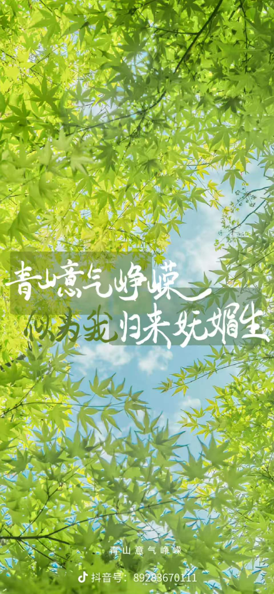
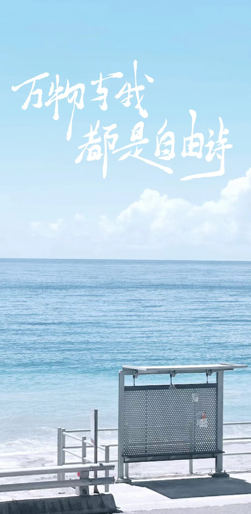
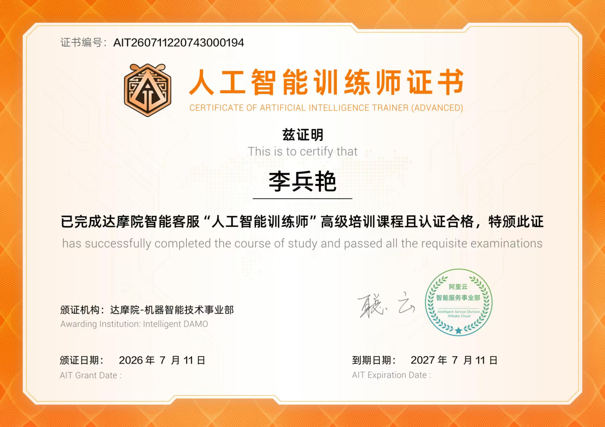

PROFILE
01 · PROFILE
个人简介
在自然中发现细节，在团队中凝聚共识。
— 01 —

🌱 关于我
本人来自贵州，性格开朗乐观，待人真诚热情。生活中喜爱香辣风味，也由此养成了爽直干脆的处事风格。
我对自然万物充满好奇，善于在野外观察中发现细节，也能在团队中活跃氛围、凝聚共识。
期待将生态学的专业积累与 AI 技术兴趣相结合，在生物多样性监测与生态数据智能处理领域持续探索。
📷 大头照 · photo1.jpg
把照片放进同目录即可显示
EDUCATION
02 · EDUCATION
教育背景
— 02 —
在读

生态学专业 · 本科（在读）
福建师范大学 · 地理科学学院
📚 主修课程
🎯 学术兴趣：自然观察与记录 · 植被群落动态分析 · AI 辅助生态图像识别与数据处理
🌄 自然风景 · 山水之间
photo7.jpg · 风景图
SKILLS
03 · SKILLS
专业技能
把生态学的观察力、AI 的工具力与视觉的表达力结合起来。
— 03 —
🤖AI 与数据工具
AI 基础模型理解与应用（CV/图像分类）90%
AI 辅助科研数据标注与清洗85%
Python 数据分析入门75%
百度飞桨 / PyTorch 基础操作72%
🎨办公与视觉表达
PPT 专业设计与逻辑呈现95%
科研作图（Origin / Excel）82%
视频剪辑与后期（剪映 / Premiere）78%
💬语言与沟通
田野调查沟通与团队协作92%
学术英语阅读80%

🌳 自然风光
photo8.jpg · 风景图

🍃 绿意风景
photo9.jpg · 风景图
EXPERIENCE
04 · EXPERIENCE
实习经历
— 04 —
2025.03 – 至今
 2024.07 – 2024.08
2024.07 – 2024.08
科研助理（实习）
福建省某生态监测项目组 · 校内合作课题
- 参与野外植物群落样方调查，累计记录并鉴定植物物种 200+ 种，协助构建区域生物多样性基础数据库。
- 利用 AI 图像识别工具（百度飞桨）辅助植被照片自动分类与标注，图像整理效率提升 约 40%。
- 协助撰写阶段性技术报告及汇报 PPT，将复杂生态数据转化为直观图表与清晰演示内容。
🏞️ 山水风景
photo10.jpg · 风景图
实习组长
福建师范大学地理科学学院 · 暑期野外综合实习
- 带队完成武夷山地区 10 个样点的植被调查与土壤采样，协调 7 人团队分工，野外数据完整率达 100%。
- 汇总分析植被覆盖率、土壤 pH 及有机质含量等指标，发现 2 个样点土壤退化趋势，为生态修复建议提供数据依据。
- 独立撰写 20 页野外实习报告并主笔答辩演示文稿，获院级 "优秀实习成果"表彰。
PROJECTS
05 · PROJECTS
项目经历
从课程设计到自主实践，把 AI 用到真实的生态场景里。
— 05 —
课程设计
2025.02 – 2025.06
城市绿地 AI 识别与生态评估
- 主导设计基于 AI 图像分类的城市常见绿地植物识别项目，收集并标注本地植物图像数据集（20 类，约 3,000 张），独立完成数据清洗与标签统一。
- 基于百度飞桨框架搭建简易 CNN 分类模型，测试准确率达 86.3%，为城市生物多样性监测提供轻量级辅助工具。
- 制作项目答辩 PPT，技术流程、模型效果与应用场景可视化呈现，获课程 "最佳创新应用"提名。
20 类植物类别
3000 张标注图像
86.3%测试准确率
自主实践
2024.10 – 2025.01
校园生物多样性快查小程序
- 作为核心成员参与校园鸟类与植物快速识别工具的素材整理与功能测试，提出 "生态日历" 模块构想，覆盖校内 50+ 个观测点。
- 整理并录入首批校园常见物种图文数据库（80+ 种），设计轻量级用户交互流程，提升非专业用户友好度。
- 剪辑项目宣传短视频发布于校内平台，累计播放量 2,000+，吸引多个班级申请试用。
80+ 种物种数据库
50+校园观测点
2000+宣传播放量
HONORS
06 · HONORS
获奖与证书
— 06 —


🤖
人工智能训练师证书
2025 年
☁️
阿里云 Apsara Clouder 专项技能认证（AI 专项）
2025 年
🏅
福建师范大学"优秀实习生"称号（实习汇报一等奖）
2024 年
🌍
全国大学生生态环保大赛校内选拔赛二等奖（基于 AI 的绿地监测方案）
2024 年
🎓
校一等奖学金（综合测评专业前 8%）
2023–2024 学年
🤖 人工智能训练师证书
☁️ 阿里云 Apsara Clouder 认证
🎓 校一等奖学金证书
📜 AI 培训结业证明